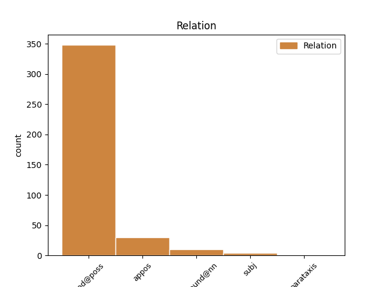
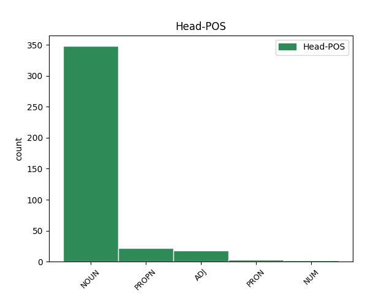
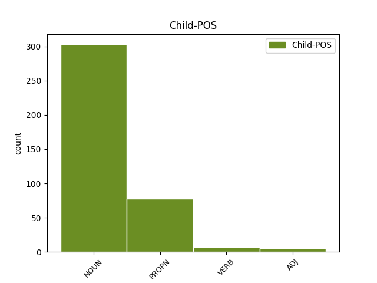

Distribution of features within this leaf



Agreement Rules sorted by frequency.
- When the dependent token is the modifer(mod@poss) of the head token, and the head token is NOUN and the dependent token is NOUN.
1 Sudnos _ _ _ _ 0 _ _ _
2 bođiiga _ _ _ _ 0 _ _ _
3 sámi sápmi NOUN N Case=Gen|Number=Sing 4 mod@poss _ _
4 soga sohka NOUN N Case=Gen|Number=Sing 0 _ _ _
5 máttarvánhemat _ _ _ _ 0 _ _ _
6 . _ _ _ _ 0 _ _ _
1 Guhkes _ _ _ _ 0 _ _ _
2 ja _ _ _ _ 0 _ _ _
3 losses _ _ _ _ 0 _ _ _
4 vuojeheame _ _ _ _ 0 _ _ _
5 maŋŋá _ _ _ _ 0 _ _ _
6 sii _ _ _ _ 0 _ _ _
7 deive _ _ _ _ 0 _ _ _
8 Davvinástti Davvinásti PROPN N Case=Gen|Number=Sing 11 mod@poss _ _
9 dahjege _ _ _ _ 0 _ _ _
10 Almmi _ _ _ _ 0 _ _ _
11 Návlli návli NOUN N Case=Gen|Number=Sing 0 _ _ _
12 lusa _ _ _ _ 0 _ _ _
13 . _ _ _ _ 0 _ _ _
1 Eamit _ _ _ _ 0 _ _ _
2 oainnat _ _ _ _ 0 _ _ _
3 diđii _ _ _ _ 0 _ _ _
4 , _ _ _ _ 0 _ _ _
5 ahte _ _ _ _ 0 _ _ _
6 Stuorra _ _ _ _ 0 _ _ _
7 Sarvva _ _ _ _ 0 _ _ _
8 fáktii _ _ _ _ 0 _ _ _
9 Riibmagállis Riibmagállis PROPN N Case=Nom|Number=Sing 0 _ _ _
10 , _ _ _ _ 0 _ _ _
11 buot _ _ _ _ 0 _ _ _
12 gievramus _ _ _ _ 0 _ _ _
13 stállu stállu NOUN N Case=Nom|Number=Sing 9 appos _ SpaceAfter=No
14 . _ _ _ _ 0 _ _ _
1 Gállá _ _ _ _ 0 _ _ _
2 oinnii _ _ _ _ 0 _ _ _
3 Fávnnas _ _ _ _ 0 _ _ _
4 ođđa _ _ _ _ 0 _ _ _
5 fiinna _ _ _ _ 0 _ _ _
6 dávgebissu _ _ _ _ 0 _ _ _
7 ja _ _ _ _ 0 _ _ _
8 gihpu gihppu NOUN N Case=Acc|Number=Sing 0 _ _ _
9 njuolaid njuolla NOUN N Case=Acc|Number=Plur 8 appos _ SpaceAfter=No
10 . _ _ _ _ 0 _ _ _
1 Muhto _ _ _ _ 0 _ _ _
2 Larsen _ _ _ _ 0 _ _ _
3 ii _ _ _ _ 0 _ _ _
4 loga _ _ _ _ 0 _ _ _
5 NRK:i _ _ _ _ 0 _ _ _
6 iežas _ _ _ _ 0 _ _ _
7 eahpeduhtavažžan _ _ _ _ 0 _ _ _
8 BB BB NOUN N Case=Gen|Number=Sing 9 compound@nn _ _
9 Sámedikke Sámediggi PROPN N Case=Gen|Number=Sing 0 _ _ _
10 joavkku _ _ _ _ 0 _ _ _
11 politihkalaš _ _ _ _ 0 _ _ _
12 doaimmain _ _ _ _ 0 _ _ _
13 . _ _ _ _ 0 _ _ _
1 Doppe _ _ _ _ 0 _ _ _
2 čohkohalai _ _ _ _ 0 _ _ _
3 maiddái _ _ _ _ 0 _ _ _
4 boarráseamos _ _ _ _ 0 _ _ _
5 Gállábártni _ _ _ _ 0 _ _ _
6 moarsi moarsi NOUN N Case=Nom|Number=Sing 0 _ _ _
7 Mánučuovga Mánučuovga PROPN N Case=Nom|Number=Sing 6 appos _ _
8 beaivenieguid _ _ _ _ 0 _ _ _
9 niegadeamen _ _ _ _ 0 _ _ _
10 . _ _ _ _ 0 _ _ _
1 Nuppi nubbi ADJ A Case=Gen|Number=Sing 2 mod@poss _ _
2 vuoru vuorru NOUN N Case=Gen|Number=Sing 0 _ _ _
3 goalmmát _ _ _ _ 0 _ _ _
4 minuvttas _ _ _ _ 0 _ _ _
5 Anette _ _ _ _ 0 _ _ _
6 nivkalii _ _ _ _ 0 _ _ _
7 čiehkačievččastaga _ _ _ _ 0 _ _ _
8 čábbát _ _ _ _ 0 _ _ _
9 njuolga _ _ _ _ 0 _ _ _
10 mollii _ _ _ _ 0 _ _ _
11 . _ _ _ _ 0 _ _ _
1 Mii mun PRON Pron Case=Nom|Number=Plur|Person=1|PronType=Prs 0 _ _ _
2 , _ _ _ _ 0 _ _ _
3 NSR-joavku NSR-joavku NOUN N Case=Nom|Number=Sing 1 appos _ SpaceAfter=No
4 , _ _ _ _ 0 _ _ _
5 eat _ _ _ _ 0 _ _ _
6 dovdda _ _ _ _ 0 _ _ _
7 Ragnhild _ _ _ _ 0 _ _ _
8 Nystad _ _ _ _ 0 _ _ _
9 dan _ _ _ _ 0 _ _ _
10 láhkai _ _ _ _ 0 _ _ _
11 ahte _ _ _ _ 0 _ _ _
12 son _ _ _ _ 0 _ _ _
13 doallá _ _ _ _ 0 _ _ _
14 iežas _ _ _ _ 0 _ _ _
15 juogalágán _ _ _ _ 0 _ _ _
16 riikkaeadnin _ _ _ _ 0 _ _ _
17 Sámis _ _ _ _ 0 _ _ _
18 , _ _ _ _ 0 _ _ _
19 nugo _ _ _ _ 0 _ _ _
20 Nils _ _ _ _ 0 _ _ _
21 Martin _ _ _ _ 0 _ _ _
22 Kristensen _ _ _ _ 0 _ _ _
23 vikkaha _ _ _ _ 0 _ _ _
24 . _ _ _ _ 0 _ _ _
1 Ivgus _ _ _ _ 0 _ _ _
2 sihke _ _ _ _ 0 _ _ _
3 nissonat nisu NOUN N Case=Nom|Number=Plur 0 _ _ _
4 ja _ _ _ _ 0 _ _ _
5 dievddut dievdu NOUN N Case=Nom|Number=Plur 3 subj _ _
6 geavahit _ _ _ _ 0 _ _ _
7 avi _ _ _ _ 0 _ _ _
8 mas _ _ _ _ 0 _ _ _
9 lea _ _ _ _ 0 _ _ _
10 riebangolli _ _ _ _ 0 _ _ _
11 . _ _ _ _ 0 _ _ _
1 Jesus _ _ _ _ 0 _ _ _
2 Kristus Kristus PROPN N Case=Nom|Number=Sing 0 _ _ _
3 ieš _ _ _ _ 0 _ _ _
4 ja _ _ _ _ 0 _ _ _
5 Ipmil Ipmil PROPN N Case=Nom|Number=Sing 2 parataxis _ SpaceAfter=No
6 . _ _ _ _ 0 _ _ _
1 Lea _ _ _ _ 0 _ _ _
2 buoret _ _ _ _ 0 _ _ _
3 borramuš _ _ _ _ 0 _ _ _
4 go _ _ _ _ 0 _ _ _
5 dat dat PRON Pron Case=Nom|Number=Sing|PronType=Dem 0 _ _ _
6 maid _ _ _ _ 0 _ _ _
7 nuorat nuorra NOUN N Case=Nom|Number=Plur 5 subj _ _
8 dán _ _ _ _ 0 _ _ _
9 áigge _ _ _ _ 0 _ _ _
10 njillet _ _ _ _ 0 _ _ _
11 . _ _ _ _ 0 _ _ _
1 Muhto _ _ _ _ 0 _ _ _
2 jos _ _ _ _ 0 _ _ _
3 mun _ _ _ _ 0 _ _ _
4 áján _ _ _ _ 0 _ _ _
5 olggos _ _ _ _ 0 _ _ _
6 bahá _ _ _ _ 0 _ _ _
7 vuoiŋŋaid _ _ _ _ 0 _ _ _
8 Ipmila Ipmil PROPN N Case=Gen|Number=Sing 9 compound@nn _ _
9 Vuoiŋŋa Vuoigŋa PROPN N Case=Gen|Number=Sing 0 _ _ _
10 fámuin _ _ _ _ 0 _ _ _
11 . _ _ _ _ 0 _ _ _
1 Son _ _ _ _ 0 _ _ _
2 lei _ _ _ _ 0 _ _ _
3 doppe _ _ _ _ 0 _ _ _
4 Ohcejogas _ _ _ _ 0 _ _ _
5 golggotmánu golggotmánnu NOUN N Case=Gen|Number=Sing 6 mod@poss _ _
6 nuppi nubbi ADJ A Case=Gen|Number=Sing 0 _ _ _
7 beaivvi _ _ _ _ 0 _ _ _
8 . _ _ _ _ 0 _ _ _
1 Hálidat _ _ _ _ 0 _ _ _
2 ahte _ _ _ _ 0 _ _ _
3 nuorat _ _ _ _ 0 _ _ _
4 galget _ _ _ _ 0 _ _ _
5 leat _ _ _ _ 0 _ _ _
6 čeavlái _ _ _ _ 0 _ _ _
7 das_go _ _ _ _ 0 _ _ _
8 leat _ _ _ _ 0 _ _ _
9 maorit maori NOUN N Case=Nom|Number=Plur 0 _ _ _
10 , _ _ _ _ 0 _ _ _
11 muitala _ _ _ _ 0 _ _ _
12 Wai Wai PROPN N Case=Nom|Number=Sing 9 subj _ SpaceAfter=No
13 . _ _ _ _ 0 _ _ _
1 Ohcci _ _ _ _ 0 _ _ _
2 : _ _ _ _ 0 _ _ _
3 Per _ _ _ _ 0 _ _ _
4 M. _ _ _ _ 0 _ _ _
5 Buljo Buljo PROPN N Case=Nom|Number=Sing 0 _ _ _
6 , _ _ _ _ 0 _ _ _
7 Guovdageaidnu Guovdageaidnu PROPN N Case=Nom|Number=Sing 5 appos _ SpaceAfter=No
8 . _ _ _ _ 0 _ _ _
Disagree Examples:
1 Gozihanlávdegoddi _ _ _ _ 0 _ _ _
2 galgá _ _ _ _ 0 _ _ _
3 fidnet _ _ _ _ 0 _ _ _
4 buot _ _ _ _ 0 _ _ _
5 dábuhahtti _ _ _ _ 0 _ _ _
6 dieđuid _ _ _ _ 0 _ _ _
7 Finnmárkkuopmodagas _ _ _ _ 0 _ _ _
8 , _ _ _ _ 0 _ _ _
9 maid _ _ _ _ 0 _ _ _
10 dárbbaša _ _ _ _ 0 _ _ _
11 dahkamušaidis dahkamuš NOUN N Case=Gen|Number=Plur|Number[psor]=Sing|Person[psor]=3 12 mod@poss _ _
12 čađaheapmái čađaheapmi NOUN N Case=Ill|Number=Sing 0 _ _ _
13 . _ _ _ _ 0 _ _ _
1 Guhkkelis _ _ _ _ 0 _ _ _
2 boaittobeale boaittobealli NOUN N Case=Gen|Number=Sing 4 mod@poss _ _
3 orru _ _ _ _ 0 _ _ _
4 mánát mánná NOUN N Case=Nom|Number=Plur 0 _ _ _
5 bohte _ _ _ _ 0 _ _ _
6 Gárdima _ _ _ _ 0 _ _ _
7 ja _ _ _ _ 0 _ _ _
8 Mollešjoga _ _ _ _ 0 _ _ _
9 , _ _ _ _ 0 _ _ _
10 Šuoššjávrri _ _ _ _ 0 _ _ _
11 ja _ _ _ _ 0 _ _ _
12 Iešjohleagi _ _ _ _ 0 _ _ _
13 duoddarstobuin _ _ _ _ 0 _ _ _
14 . _ _ _ _ 0 _ _ _
1 Guhkkelis _ _ _ _ 0 _ _ _
2 boaittobeale _ _ _ _ 0 _ _ _
3 orru _ _ _ _ 0 _ _ _
4 mánát _ _ _ _ 0 _ _ _
5 bohte _ _ _ _ 0 _ _ _
6 Gárdima Gárdin PROPN N Case=Gen|Number=Sing 13 mod@poss _ _
7 ja _ _ _ _ 0 _ _ _
8 Mollešjoga _ _ _ _ 0 _ _ _
9 , _ _ _ _ 0 _ _ _
10 Šuoššjávrri _ _ _ _ 0 _ _ _
11 ja _ _ _ _ 0 _ _ _
12 Iešjohleagi _ _ _ _ 0 _ _ _
13 duoddarstobuin duoddarstohpu NOUN N Case=Loc|Number=Plur 0 _ _ _
14 . _ _ _ _ 0 _ _ _
1 Guovddážis _ _ _ _ 0 _ _ _
2 dán _ _ _ _ 0 _ _ _
3 barggus _ _ _ _ 0 _ _ _
4 lea _ _ _ _ 0 _ _ _
5 Sámi _ _ _ _ 0 _ _ _
6 dutkamiid dutkan NOUN N Case=Gen|Number=Plur 7 mod@poss _ _
7 guovddáš guovddáš NOUN N Case=Nom|Number=Sing 0 _ _ _
8 . _ _ _ _ 0 _ _ _
1 Guovlluid guovlu NOUN N Case=Gen|Number=Plur 2 mod@poss _ _
2 dearvvašvuođafitnodagain dearvvašvuođafitnodat NOUN N Case=Loc|Number=Plur 0 _ _ _
3 gáibiduvvojit _ _ _ _ 0 _ _ _
4 dakkár _ _ _ _ 0 _ _ _
5 rutiinnat _ _ _ _ 0 _ _ _
6 . _ _ _ _ 0 _ _ _